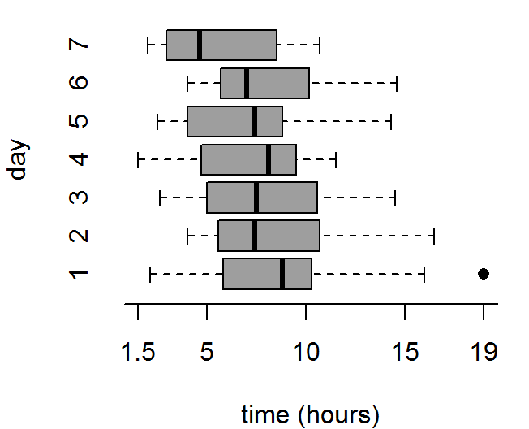
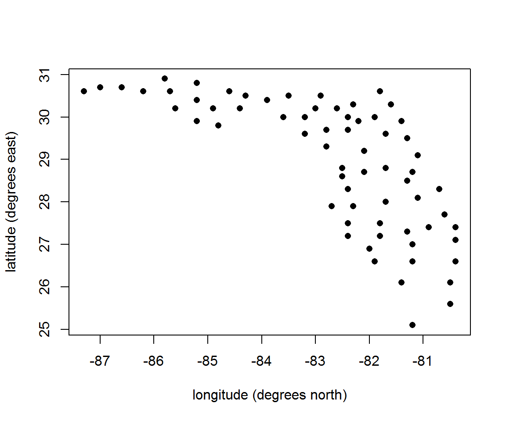
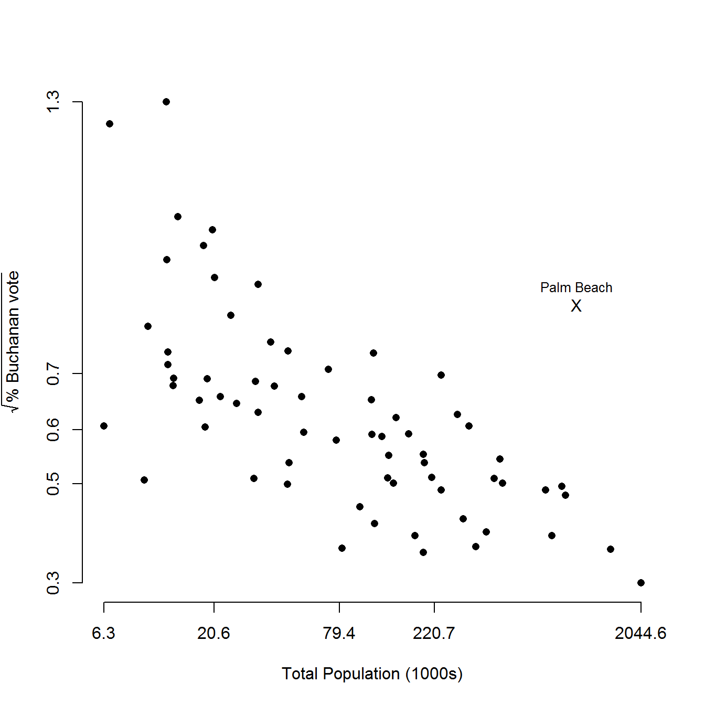
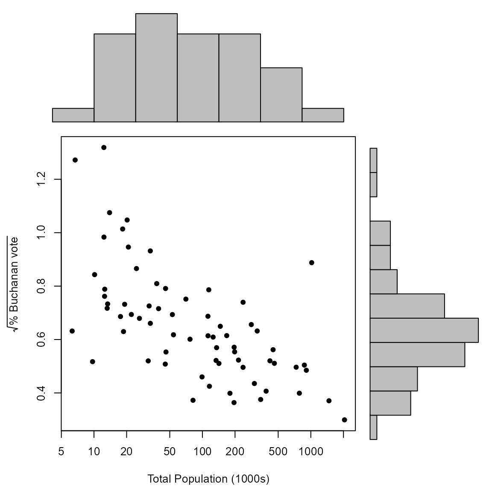
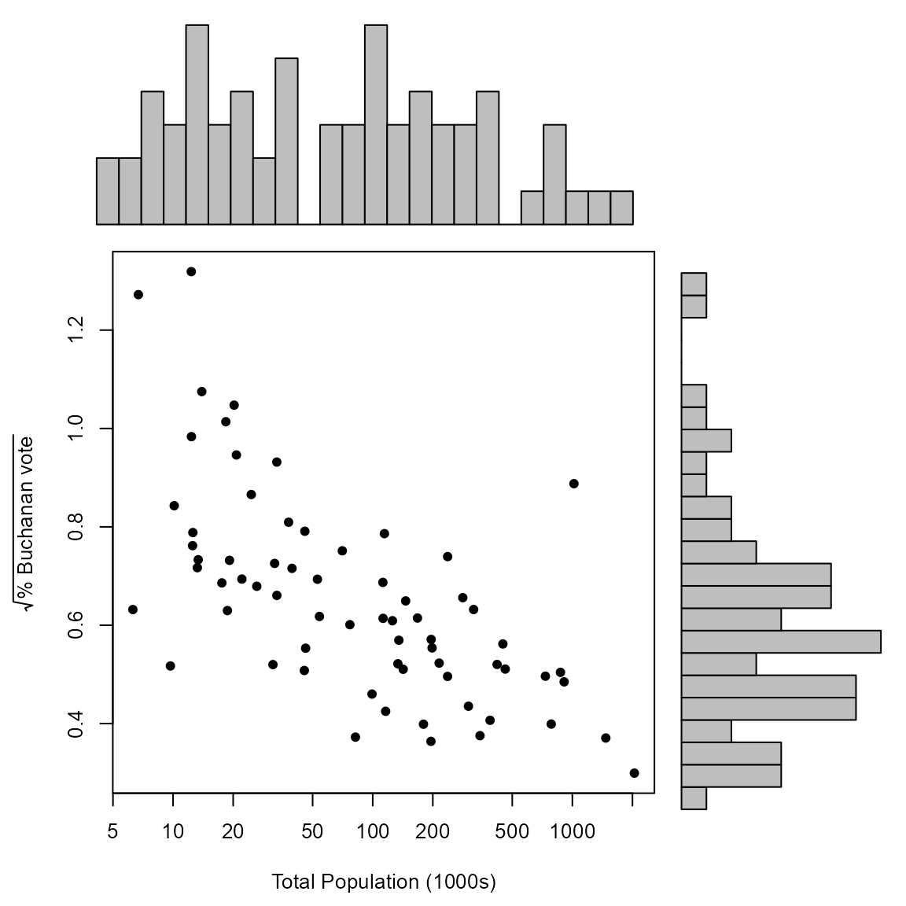

vignettes/stat0002-ch2c-graphs-vignette.Rmd
stat0002-ch2c-graphs-vignette.RmdThe main purpose of this vignette is to provide R code to produce graphs that involve more than one variable. We consider two general situations: (i) plotting the values of a continuous variable for different values of a categorical variable (see The Oxford Birth Times data) and (ii) scatter plots of one variable against another (see The 2000 US Presidential Election data). See also the Chapter 2: Graphs (one variable).
These data are available in the data frame
ox_births.
> library(stat0002)
> birth_times <- ox_births[, "time"]
> day <- ox_births[, "day"]To display these data we manipulate them into a matrix that is of the
same format as Table 2.1 in the notes. The number of birth times varies
between days so we pad the matrix with R’s missing values code
NA in order that each column of the matrix has the same
number of rows.
> ox_mat <- matrix(NA, ncol = 7, nrow = 16)
> for (i in 1:7) {
+ day_i_times <- ox_births$time[which(ox_births$day == i)]
+ ox_mat[1:length(day_i_times), i] <- sort(day_i_times)
+ colnames(ox_mat) <- paste("day", 1:7, sep = "")
+ }
> ox_mat
day1 day2 day3 day4 day5 day6 day7
[1,] 2.10 4.00 2.60 1.50 2.50 4.00 2.00
[2,] 3.40 4.10 3.60 4.70 2.50 4.00 2.70
[3,] 4.25 5.00 3.60 4.70 3.40 5.25 2.75
[4,] 5.60 5.50 6.40 7.20 4.20 6.10 3.40
[5,] 6.40 5.70 6.80 7.25 5.90 6.50 4.20
[6,] 7.30 6.50 7.50 8.10 6.25 6.90 4.30
[7,] 8.50 7.25 7.50 8.50 7.30 7.00 4.90
[8,] 8.75 7.30 8.25 9.20 7.50 8.45 6.25
[9,] 8.90 7.50 8.50 9.50 7.80 9.25 7.00
[10,] 9.50 8.20 10.40 10.70 8.30 10.10 9.00
[11,] 9.75 8.50 10.75 11.50 8.30 10.20 9.25
[12,] 10.00 9.75 14.25 NA 10.25 12.75 10.70
[13,] 10.40 11.00 14.50 NA 12.90 14.60 NA
[14,] 10.40 11.20 NA NA 14.30 NA NA
[15,] 16.00 15.00 NA NA NA NA NA
[16,] 19.00 16.50 NA NA NA NA NAWe have a numeric continuous variable, birth_times, and
a categorical variable, day. The following code produces
separate boxplots of birth_times for each day of the
week.
> par(mar = c(4, 4, 0.5, 1))
> xlab <- "time (hours)"
> x_labs <- c(min(birth_times), pretty(birth_times), max(birth_times))
> # top left
> box_plot(birth_times ~ day, col = 8, ylab = xlab, pch = 16, xlab = "day")
> # top right
> box_plot(birth_times ~ day, col = 8, horizontal = TRUE, axes = FALSE, xlab = xlab, ylab = "day", pch = 16)
> axis(1, at = x_labs, labels = x_labs)
> axis(2, at = 1:7, labels = 1:7, lwd = 0, lty = 0)
> # bottom left
> box_plot(birth_times ~ day, axes = FALSE, ylab = xlab, pch = 16, lty = 1, range = 0, boxcol = "white", staplewex = 0, medlty = "blank", medpch = 16, xlab = "day")
> axis(1, at = 1:7, labels = 1:7, lwd = 0, lty = 0)
> axis(2, at = x_labs, labels = x_labs)
> # bottom right
> box_plot(birth_times ~ day, horizontal = TRUE, axes = FALSE, xlab = xlab, pch = 16, lty = 1, range = 0, boxcol = "white", staplewex = 0, medlty = "blank", medpch = 16)
> axis(1, at = x_labs, labels = x_labs)
> axis(2, at = 1:7, labels = 1:7, lwd = 0, lty = 0, las = 1)
These data are available in the data frame USelection.
See ?USelection for details.
> # County identifiers and location
> head(USelection[, 1:4])
co co_names lat lon
1 1 Alachua 29.7 82.4
2 2 Baker 30.3 82.3
3 3 Bay 30.2 85.6
4 4 Bradford 29.9 82.2
5 5 Brevard 28.3 80.7
6 6 Broward 26.1 80.5
> # County demographic variables
> head(USelection[, 5:12])
npop whit blac hisp o65 hsed coll inco
1 198326 74.4 21.8 4.7 9.4 82.7 34.6 19412
2 20761 82.4 16.8 1.5 7.7 64.1 5.7 14859
3 146223 84.2 12.4 2.4 11.9 74.7 15.7 17838
4 24646 76.1 22.9 2.6 11.8 65.0 8.1 13681
5 460977 88.3 9.2 4.1 16.5 82.3 20.4 19567
6 1470758 80.3 17.5 10.9 20.3 76.8 18.8 24706
> # Numbers of votes for candidates
> head(USelection[, 13:22])
bush gore brow nade harr hage buch mcre phil moor
1 34124 47365 658 3226 6 42 263 4 20 21
2 5610 2392 17 53 0 3 73 0 3 3
3 38637 18850 171 828 5 18 248 3 18 27
4 5414 3075 28 84 0 2 65 0 2 3
5 115185 97318 643 4470 11 39 570 11 72 76
6 177323 386561 1212 7101 50 129 788 34 74 124For the moment we simply produce some scatter plots. A separate vignette will be devoted to these data.
A plot to show the locations of the counties.
> plot(-USelection[, "lon"], USelection[, "lat"], xlab = "longitude (degrees north)", ylab = "latitude (degrees east)", pch = 16)
A plot of the percentage of the vote for Buchanan against population size.
> pbuch <- 100 * USelection$buch/USelection$tvot
> is_PB <- USelection[, "co_names"] == "PalmBeach"
> pch <- 1 + 3 * is_PB
> pch
[1] 1 1 1 1 1 1 1 1 1 1 1 1 1 1 1 1 1 1 1 1 1 1 1 1 1 1 1 1 1 1 1 1 1 1 1 1 1 1
[39] 1 1 1 1 1 1 1 1 1 1 1 4 1 1 1 1 1 1 1 1 1 1 1 1 1 1 1 1 1
> plot(USelection$npop, pbuch, xlab = "population", ylab = "Buchanan % vote", pch = pch)
> which_PB <- which(is_PB)
> text(USelection[which_PB, "npop"], pbuch[which_PB] + 0.1, "Palm Beach", cex = 0.8)Pairwise scatter plots of the demographic variables.
> pairs(USelection[, 5:12])A plot of the square root of the percentage of the vote for Buchanan against population size, in thousands of people. The horizontal axis has been plotted on a log scale.
> x <- USelection$npop / 1000
> y <- sqrt(pbuch)
> ystring <- expression(sqrt("% Buchanan vote"))
> rm_PB <- which(!is_PB)
> scatter(x[rm_PB], y[rm_PB], pch = 16, xlab ="Total Population (1000s)", ylab = ystring, log = "x")
> points(x[which_PB], y[which_PB], pch = "X")
> text(x[which_PB], y[which_PB] + 0.04, "Palm Beach", cex = 0.8)
Can you see how the different method to identify Palm Beach works?
Can you guess what the numbers on the axes are? See
scatter to find out.
Similarly, we use scatter_hist to create a scatter plot
in which the distribution of each variable is summarized by a
histogram.
> scatter_hist(x, y, log = "x", pch = 16, xlab ="Total Population (1000s)", ylab = ystring)
The plot in the lecture slides is produced by specifying particular bins for the histograms.
> logx <- log(x)
> xbreaks <- seq(from = min(logx), to = max(logx), len = 25)
> ybreaks <- seq(from = min(y), to = max(y), len = 25)
> scatter_hist(x, y, log = "x", pch = 16, xlab ="Total Population (1000s)", ylab = ystring, xbreaks = xbreaks, ybreaks = ybreaks)